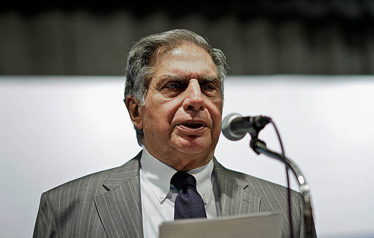
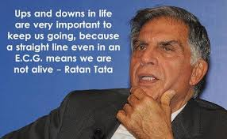

Mr. Ratan Tata
Former chairman of Tata Sons

Here's a time line of Mr. Ratan Tata's life :
- 2000 - In 2000 the group acquired London-based Tetley Tea for $431.3 million.
- 2004 - In 2004 it purchased the truck-manufacturing operations of South Korea’s Daewoo Motors for $102 million.
- 2007 - In 2007 Tata Steel completed the biggest corporate takeover by an Indian company when it acquired the giant Anglo-Dutch steel manufacturer Corus Group for $11.3 billion.
- 2008 - In 2008 Tata oversaw Tata Motors’ purchase of the elite British car brands Jaguar and Land Rover from the Ford Motor Company.
The $2.3 billion deal marked the largest-ever acquisition by an Indian automotive firm.
- 2009 - The following year the company launched the Tata Nano, a tiny rear-engined, pod-shaped vehicle with a starting price of approximately 100,000 Indian rupees, or about $2,000.
- 2012 - In December 2012 Tata retired as chairman of the Tata Group.
- 2016 - He briefly served as interim chairman beginning in October 2016 following the ouster of his successor, Cyrus Mistry
- 2017 - Tata returned to retirement in January 2017 when Natarajan Chandrasekaran was appointed chairman of the Tata Group.
- 2000 - Among many other honours accorded him during his career, Tata received the Padma Bhushan, one of India’s most distinguished civilian awards, in 2000.
Inspirational Quotes by Kalam Sir
2. Be Courageous and Think Differently.
